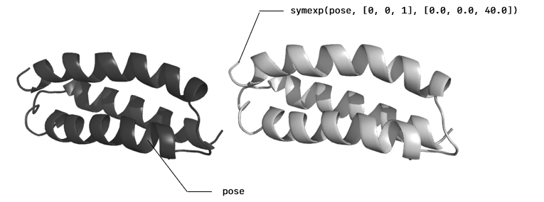

Pose
As previously stated, a Pose is the main object of ProtoSyn and brings together both the Graph and the State. The following methods directly operate on Pose structs. These methods are subdivided by topics, for organization purposes:
- Creating, appending and inserting Fragments
- Appending, inserting and removing Atom and Residue instances
- Copying and merging
- Aligning poses
- Diagnosing poses
Creating, appending and inserting Fragments
The next methods allow a user to create a new Fragment from a Pose instance and append or insert in in an existing structure. Note: creation of a new Fragment from a sequence of Residue codes is available at the Builder submodule.
ProtoSyn.fragment — Methodfragment(pose::Pose{Topology})Return a Fragment from a given Pose pose. The pose must have a single Segment.
fragment(pose::Pose{Topology}, selection::ProtoSyn.AbstractSelection)Return a Fragment from a list of residues retrieved from the given selection when applied to the provided Pose pose. If not yet of selection type Residue, the selection will be promoted to Residue selection type (with the default any aggregating function). The resulting list of residues must be contiguous (a connected graph of Residue instances parenthoods). These will constitute the unique Segment of the resulting Fragment.
A Fragment is a Pose{Segment}, without a root/origin. These are usually used as temporary carriers of information, without the ability to be directly incorporated in simulations.
Examples
julia> frag = fragment(pose)
Fragment(Segment{/UNK:9547}, State{Float64}:
Size: 343
i2c: false | c2i: false
Energy: Dict(:Total => Inf)
)
julia> frag = fragment(pose, rid"1:10")
Fragment(Segment{/UNK:58266}, State{Float64}:
Size: 160
i2c: false | c2i: false
Energy: Dict(:Total => Inf)
)ProtoSyn.fragment! — Functionfragment!(pose::Pose{Topology}, selection::ProtoSyn.AbstractSelection; [keep_downstream_position::Bool = true])Return a Fragment from a list of residues retrieved from the given AbstractSelection selection when applied to the provided Pose pose. If not yet of selection type Residue, the selection will be promoted to Residue selection type (with the default any aggregating function). The resulting list of residues must be contiguous (a connected graph of Residue instances parenthoods). These will constitute the unique Segment of the resulting Fragment. In opposition to the fragment method, this function will remove the fragmented Residue instances from the original Pose (using the pop_residue! method). If keep_downstream_position is set to true (is, by default), the downstream Residue position is maintained (by calling request_c2i! and sync! methods).
A Fragment is a Pose{Segment}, without a root/origin. These are usually used as temporary carriers of information, without the ability to be directly incorporated in simulations.
Examples
julia> frag = fragment!(pose, rid"19:26")
Fragment(Segment{/UNK:9547}, State{Float64}:
Size: 343
i2c: true | c2i: false
Energy: Dict(:Total => Inf)
)ProtoSyn.isfragment — Functionisfragment(pose::Pose)Return true if the given pose Graph is a single non-empty Segment (with no container).
See also
Examples
julia> isfragment(frag)
true
julia> isfragment(pose)
falseProtoSyn.append_fragment_as_new_segment! — Methodappend_fragment_as_new_segment!(pose::Pose{Topology}, frag::Fragment)Append a Fragment frag as a new Segment to the given Pose pose. This function overwrites pose.
See also
Examples
julia> ProtoSyn.append_fragment_as_new_segment!(pose, frag)
Pose{Topology}(Topology{/UNK:1}, State{Float64}:
Size: 373
i2c: false | c2i: false
Energy: Dict(:Total => Inf)
)ProtoSyn.append_fragment! — Methodappend_fragment!(pose::Pose{Topology}, residue::Residue, grammar::LGrammar, frag::Pose{Segment}; op = "α")Add the Fragment frag to the given Pose pose, appending it after the given Residue residue. This residue and the new Fragment frag will be connected using operation op ("α" by default) of the given LGrammar grammar. Request internal to cartesian coordinate conversion and return the altered Pose pose.
See also
Examples
julia> ProtoSyn.append_fragment!(pose, pose.graph[1][end], res_lib, frag)
Pose{Topology}(Topology{/UNK:1}, State{Float64}:
Size: 373
i2c: true | c2i: false
Energy: Dict(:Total => Inf)
)ProtoSyn.insert_fragment! — Methodinsert_fragment!(pose::Pose{Topology}, residue::Residue, grammar::LGrammar, frag::Pose{Segment}; op = "α")Insert the Fragment frag in the given pose, on the position of the provided Residue instance residue (the residue gets shifted downstream). This first downstream Residue and the new Fragment will be connected using operation op ("α" by default) from [LGrammar] grammar. Also connects to the upstream Residue instance, using the same operation. Request internal to cartesian coordinate conversion and return the altered Pose pose.
Consider using more specific versions of this function, see Peptides.insert_fragment!
See also
Examples
julia> ProtoSyn.insert_fragment!(pose, pose.graph[1][1], res_lib, frag)
Pose{Topology}(Topology{/UNK:1}, State{Float64}:
Size: 373
i2c: true | c2i: false
Energy: Dict(:Total => Inf)
)Appending, inserting and removing Atom and Residue instances
In this section the methods responsible to manipulating the molecular structure of a Pose are explored.
ProtoSyn.insert_atom_as_children! — Functioninsert_atom_as_children!(pose::Pose, parent_atom::Atom, atom::Atom, [atomstate::Opt{AtomState} = nothing])Add the given Atom atom to the Pose pose graph, as a child of parent_atom. Correctly sets atom.container, container.size, container.items_by_name, parenthood relationships, bonds, indexes and ascedents. If an optional AtomState atomstate is provided, the inserted atom's State is set, otherwise, insert an empty State (with all internal and cartesian coordinates set to zero). Return the modified (in-place) Pose pose.
Examples
julia> ProtoSyn.insert_atom_as_children!(pose, pose.graph[1][1][1], Atom("N", 1, 1, "N"))
Pose{Topology}(Topology{/UNK:1}, State{Float64}:
Size: 344
i2c: false | c2i: false
Energy: Dict(:Total => Inf)
)ProtoSyn.pop_atom! — Functionpop_atom!(pose::Pose{Topology}, atom::Atom; [keep_downstream_position::Bool = true])Pop and return the given Atom atom from the given Pose pose. In order to do this, perform the following actions:
- Unset parenthood relationships (On
Atomlevel only); - Unbond neighbouring
Atominstances; - Remove from Graph;
- Remove from State;
- Set new
ascendents; - Update the
container.itemsbyname.
If keep_downstream_position is set to true (is, by default), the downstream Residue position is maintained (by calling request_c2i! and sync! methods). In either case, this method requests internal to cartesian coordinates conversion at the end (using the request_i2c! method).
See also
Examples
julia> ProtoSyn.pop_atom!(pose, pose.graph[1][1][2])
Pose{Atom}(Atom{/H:6299}, State{Float64}:
Size: 1
i2c: true | c2i: false
Energy: Dict(:Total => Inf)
)ProtoSyn.pop_atoms! — Functionpop_atoms!(pose::Pose{Topology}, selection::Opt{AbstractSelection} = nothing; keep_downstream_position::Bool = false)Remove all selected atoms (by the given AbstractSelection selection) from the provided Pose pose. keep_downstream_position sets whether to re-calculate the internal coordinates of downstream Atom instances (children) from cartesian coordinates (set to false, by default).
See also
Examples
julia> ProtoSyn.pop_atoms!(pose, as"H")
Pose{Topology}(Topology{/1bkr:24417}, State{Float64}:
Size: 887
i2c: true | c2i: false
Energy: Dict(:Total => Inf)
)ProtoSyn.pop_residue! — Functionpop_residue!(pose::Pose{Topology}, residue::Residue; [keep_downstream_position::Bool = false])Pop and return the desired Residue residue from the given Pose pose. This is peformed by popping each Atom of the Residue residue individually. If keep_downstream_position is set to true (is, by default), the downstream Residue position is maintained (by calling request_c2i! and sync! methods). In either case, this method requests internal to cartesian coordinates conversion at the end (using the request_i2c! method).
See also
Examples
julia> r = ProtoSyn.pop_residue!(pose, pose.graph[1][5])
Pose{Residue}(Residue{/ALA:51397}, State{Float64}:
Size: 10
i2c: true | c2i: false
Energy: Dict(:Total => Inf)
)ProtoSyn.sort_atoms_by_graph! — Functionsort_atoms_by_graph!(state::State, container::Residue; [start::Opt{Atom} = nothing], [search_algorithm::F = ProtoSyn.BFS]) where {F <: SearchAlgorithm}Sorts the Atom instances in the given Residue container to match its graph. By default, employs travel_graph to get the new sorted list of Atom instances (from the first Atom in the Residue container, set start argument to define a new starting point). Also updates the Atom order in the corresponding and provided State state. Expects both the State and respective Graph to be correctly re-indexed (see reindex). By default, uses search_algorithm BFS (breath first search). Note that, after sorting, Atom indexes may be wrong. It's reccommended to reindex the encompassing Pose after.
sort_atoms_by_graph!(state::State, container::Union{Topology, Segment}; [start::Opt{Atom} = nothing], [search_algorithm::F = ProtoSyn.BFS]) where {F <: SearchAlgorithm}Applies sort_atoms_by_graph! to all Residue instances in the given container. Automatically calls reindex after sorting the Atom instances.
sort_atoms_by_graph!(pose::Pose; start::Opt{Atom} = nothing, search_algorithm::F = ProtoSyn.DFS) where {F <: SearchAlgorithm}Applies sort_atoms_by_graph! to all Residue instances in the given Pose pose. Automatically calls reindex after sorting the Atom instances.
Examples
julia> ProtoSyn.sort_atoms_by_graph!(pose.state, pose.graph[1, 1])
(State{Float64}:
Size: 1140
i2c: false | c2i: false
Energy: Dict(:Total => Inf)
, Residue{/2a3d:3900/A:1/MET:1})
julia> ProtoSyn.sort_atoms_by_graph!(pose.state, pose.graph, search_algorithm = ProtoSyn.Peptides.IUPAC)
(State{Float64}:
Size: 26
i2c: false | c2i: false
Energy: Dict(:Total => Inf)
, Topology{/test:378})ProtoSyn.add_hydrogens! — Functionadd_hydrogens!(pose::Pose, res_lib::LGrammar, selection::Opt{AbstractSelection} = nothing)Predict and add hydrogens to the provided Pose pose, according to the templates in the given LGrammar res_lib. Note that both residues and atoms are retrieved from the res_lib based on their name. If provided, an AbstractSelection selection limits the selected atoms to receive hydrogens (defaults to an Atom level AbstractSelection, expects Atom instances in the given Pose pose to be correctly indexed). This function applies internal coordinates based on the template from res_lib where the dihedral angle is rotated in order to match the current dihedral angles in the Pose pose. Make sure the internal coordinates are synched (using the sync! method).
Examples
julia> ProtoSyn.add_hydrogens!(pose, Peptides.grammar, rid"1:10")
Pose{Topology}(Topology{/1bkr:47568}, State{Float64}:
Size: 975
i2c: false | c2i: false
Energy: Dict(:Total => Inf)
)ProtoSyn.replace_by_fragment! — Functionreplace_by_fragment!(pose::Pose, atom::Atom, fragment::Fragment; [remove_downstream_graph::Bool = true], [spread_excess_charge::Bool = true])Replace the selected Atom atom instance (and any downstream children atom, if remove_downstream_graph is set to true (is, by default), uses travel_graph, with the default ProtoSyn.BFS search algorithm, starting on Atom atom to define the downstream region) with the given Fragment fragment, in the context of the provided Pose pose (updates the State and Graph). The first Atom in the Fragment fragment (also known as root or R Atom) is placed in the same position as the chosen Atom atom for replacement, and is then removed. This serves only to orient the remaining Fragment fragment. If the spread_excess_charge flasg is set to true (is, by default), the total sum of partial charges in the added Fragment fragment is divided by the number of remaning bonds (if remove_downstream_graph is set to true, some bonds may be removed during the replacement process) and added to each bonded Atom instance. Requests internal to cartesian coordinates.
Examples
julia> frag = ProtoSyn.getvar(ProtoSyn.modification_grammar, "PO4")
Fragment(Segment{/po4:18413}, State{Float64}:
Size: 5
i2c: false | c2i: false
Energy: Dict(:Total => Inf)
)
julia> ProtoSyn.replace_by_fragment!(pose, pose.graph[1, 3, "HG"], frag)
Pose{Topology}(Topology{/2a3d:3900}, State{Float64}:
Size: 1143
i2c: true | c2i: false
Energy: Dict(:Total => Inf)
)Copying and merging
The following methods allow a user to save or replicate an existing Pose (for example, for simulations with multiple molecules).
Base.copy — Methodcopy(pose::Pose)Return a copied Pose of the provided pose. The resulting Pose will have different :id fields for the Graph Topology and State.
This function is a Base module overload.
Examples
julia> copy(pose)
Pose{Topology}(Topology{/UNK:9547}, State{Float64}:
Size: 343
i2c: false | c2i: false
Energy: Dict(:Total => Inf)
)ProtoSyn.recoverfrom! — Functionrecoverfrom!(pose::Pose, backup::Pose)Recovers the Pose pose State and Graph from a backup Pose while maintaining any reference to the given Pose pose. In essence, when using a Driver, simply using copy! will create a new instance, and sometimes this can cause bugs. It's recommended to employ recoverfrom! in such cases.
Examples
julia> ProtoSyn.recoverfrom!(pose, backup)
Pose{Topology}(Topology{/2a3d:31788}, State{Float64}:
Size: 1140
i2c: false | c2i: false
Energy: Dict(:Total => Inf)
)ProtoSyn.merge — Functionmerge(pose1::Pose, pose2::Pose)Merge the two given poses, creating a new Pose in the process.
Examples
julia> ProtoSyn.merge(pose, pose_mod)
Pose{Topology}(Topology{/merged:32083}, State{Float64}:
Size: 686
i2c: false | c2i: false
Energy: Dict(:Total => Inf)
)
...ProtoSyn.merge! — Functionmerge!(pose1::Pose, pose2::Pose)Merge the two given poses, updating/overwritting the given pose1.
Examples
julia> ProtoSyn.merge!(pose, pose_mod)
Pose{Topology}(Topology{/merged:10313}, State{Float64}:
Size: 748
i2c: false | c2i: true
Energy: Dict(:Total => Inf)
)
...ProtoSyn.symexp — Functionsymexp(pose::Pose, reps::Vector{Int}, unit_cell_dims::Vector{T}) where {T <: AbstractFloat}Return a symmetry expanded Pose. Create N copies of the given pose in all 3 symmetry axis of a cubic lattice, where reps is the number of copies in each of the dimensions X, Y and Z (N is, therefore, reps[1]reps[2]reps[3]). Length of reps must be 3. unit_cell_dims sets the distance in each of dimension to translate the copies, in Angstrom Å. Length of unit_cell_dims must be 3. Copies the given pose, returning a new struct.
See also
symexp! merge
Examples
julia> ProtoSyn.symexp(pose, [2, 2, 2], [50.0, 50.0, 50.0])
Pose{Topology}(Topology{/UNK:59312}, State{Float64}:
Size: 9261
i2c: false | c2i: false
Energy: Dict(:Total => Inf)
)
...ProtoSyn.symexp! — Functionsymexp!(pose::Pose, reps::Vector{Int}, unit_cell_dims::Vector{T}) where {T <: AbstractFloat}Return a symmetry expanded Pose. Create N copies of the given pose in all 3 symmetry axis of a cubic lattice, where reps is the number of copies in each of the dimensions X, Y and Z (N is, therefore, reps[1]reps[2]reps[3]). Length of reps must be 3. unit_cell_dims sets the distance in each of dimension to translate the copies, in Angstrom Å. Length of unit_cell_dims must be 3. Copies the given pose, returning a new struct. Updates/overwrites the given pose.
See also
symexp merge
Examples
julia> ProtoSyn.symexp!(pose, [2, 2, 2], [50.0, 50.0, 50.0])
Pose{Topology}(Topology{/merged:10313}, State{Float64}:
Size: 748
i2c: false | c2i: false
Energy: Dict(:Total => Inf)
)
...
Figure 1 | An example of the output of symexp with just one symmetry dimension. The second Pose is a copy of the original, translated in 1 dimension by the defined value.
Aligning poses
The following methods allow a user to juxtapose two Pose instances and measure the RMSD distance between them.
ProtoSyn.align! — Functionalign!(mobile::Pose, target::Pose)
align!(mobile::Pose, target::Pose, selection::ProtoSyn.AbstractSelection)
align!(mobile::Pose, target::Pose, mobile_selection::ProtoSyn.AbstractSelection, target_selection::ProtoSyn.AbstractSelection)Application of the Kabsch algorithm. Applies a rotation + translation movement on the mobile Pose instance in order to align to the target Pose instance. If a selection is provided, only the subset of selected Atom instances (on both Pose structures) will be considered to calculate the necessary rotation + translation movement (minimizing the RMSD). If two AbstractSelection instances are provided (mobile_selection and target_selection), each is applied to the respective Pose instances (mobile and target, respectively) in order to calculate the necessary rotation + translation movement. Sets mobile.state.c2i to true and returns the altered mobile Pose instance.
This function can also align Fragment instances.
See also
Examples
julia> ProtoSyn.align!(pose, pose_mod)
Pose{Topology}(Topology{/UNK:1}, State{Float64}:
Size: 343
i2c: false | c2i: false
Energy: Dict(:Total => Inf)
)
julia> ProtoSyn.align!(pose, pose_mod, an"CA")
Pose{Topology}(Topology{/UNK:1}, State{Float64}:
Size: 343
i2c: false | c2i: false
Energy: Dict(:Total => Inf)
)
julia> ProtoSyn.align!(pose, pose_mod, an"CA", an"CB")
Pose{Topology}(Topology{/UNK:1}, State{Float64}:
Size: 343
i2c: false | c2i: false
Energy: Dict(:Total => Inf)
)ProtoSyn.center_of_mass — Functioncenter_of_mass(pose::Pose)Return the center of mass X, Y and Z cartesian coordinates of the given Pose pose (based on the current cartesian coordinates - make sure the Pose pose is synched, using the sync! method).
center_of_mass(pose::Pose, selection::AbstractSelection)Return the center of mass X, Y and Z cartesian coordinates of the given Pose pose, taking into consideration only the subset of selected Atom instances in the AbstractSelection selection (based on the current cartesian coordinates - make sure the Pose pose is synched, using the sync! method).
center_of_mass(pose::Pose, idxs::Vector{Int})Return the center of mass X, Y and Z cartesian coordinates of the given Pose pose, taking into consideration only the subset of Atom instances in the vector idxs (by Atom index, based on the current cartesian coordinates - make sure the Pose pose is synched, using the sync! method).
Examples
julia> ProtoSyn.center_of_mass(pose)
3×1 Matrix{Float64}:
39.85855147920603
14.995282315671613
-0.016516024315774907
julia> ProtoSyn.center_of_mass(pose, an"CA")
3×1 Matrix{Float64}:
37.56949530961898
14.249844760318357
-5.4078476622375185e-16ProtoSyn.rmsd — Functionrmsd(pose1::Pose, pose2::Pose)
rmsd(pose1::Pose, pose2::Pose, selection::AbstractSelection)Calculates the RMSD value between 2 Pose instances, based on the cartesian coordinates. Note: Make sure the poses have been synched beforehand (using the sync! method). If an AbstractSelection selection is provided, calculate the RMSD values of only the selected subset of Atom instances. Returns RMSD result in Angstrom (Å).
See also
Examples
julia> ProtoSyn.rmsd(pose, pose_mod)
34.443215682826676
julia> ProtoSyn.rmsd(pose, pose_mod, an"CA")
32.5063913965703Diagnosing poses
ProtoSyn may sometimes expect a certain level of standardization between Pose instances. This includes, but is not restricted to, Atom names, order, graph completeness, neutral charge, etc. ProtoSyn makes available tools to diagnose Pose instances, when things take a turn for the worst, and other auxiliary methods for debugging faulty Pose instances.
ProtoSyn.diagnose — Functiondiagnose(pose::Pose; [return_issues::Bool = false], [atom_order_search_algorithm::F = ProtoSyn.BFS]) where {F <: SearchAlgorithm}Measure several agreement criteria on the given Pose pose:
- Checks residue-level graph for any
Residueinstance without parent - Checks atom-level graph for any
Atominstance without parent - Checks if atom-level graph travels all
Atominstances in the givenPosepose - Checks if atom-level graph and list of
Atominstances in the givenPoseposehave the same order - Checks if any internal to cartesian coordinate conversion (or vice-versa) is pending
- Check if the
Poseposeindexation matches the order of atoms (both in the :id and :index fields)
Any Graph travel is done using the ProtoSyn.travel_graph method, employing the given atom_order_search_algorithm (ProtoSyn.BFS, by default). If return_issues is set to true (false, by default) doesn't print results to stdout, returns them as a Vector{String} instead.
Examples
julia> ProtoSyn.diagnose(pose)
⬤ Diagnosing pose 4J88 ...
|
├── • Residue-level graph OK
|
├── • Atom-level graph (1 issue identified)
| └── Travelling from the first atom on the pose list, not all atoms were visited (From graph: 466 | From list: 1805).
| Check for breaks in the parenthood relationships. Suggested fix: consider using the infer_parenthood! function.
|
├── • Pose synchronization status OK
|
└── • Pose indexation (1 issue identified)
└── Pose indexation doesn't match the current order of atoms in each AbstractContainer (on the :id fields).
Check atoms 63 and 64. Suggested fix: Consider using the reindex function.ProtoSyn.set_parenthood_as_forces! — Functionset_parenthood_as_forces!(pose::Pose, [selection::Opt{AbstractSelection} = nothing])Set a vector between any given Atom instance in the provided Pose pose and its .parent as that Atom instance's force (in the pose.state). If an AbstractSelection selection is given, only loop over the selected atoms. Useful for debuging purposes.
See also
Examples
julia> ProtoSyn.set_parenthood_as_forces!(pose)
julia> pose.state.f
3×7 Matrix{Float64}:
0.512436 -1.4 -0.7 -1.43 0.7 1.4 0.7
0.512436 0.0 1.21244 -1.46422e-7 1.21244 -4.88498e-15 -1.21244
-6.27553e-17 1.21234e-16 -1.31353e-16 8.09416e-7 -2.52586e-16 -1.21234e-16 1.31353e-16ProtoSyn.write_forces — Functionwrite_forces(pose::Pose, filename::String, α::T = 1.0) where {T <: AbstractFloat}Write the Pose pose forces to filename in a specific format to be read by the companion Python script "cgoarrow.py" (see [https://pymolwiki.org/index.php/Cgoarrow](https://pymolwiki.org/index.php/Cgo_arrow)). α sets a multiplying factor to make the resulting force vectors longer/shorter (for visualization purposes only).
See also
Examples
julia> ProtoSyn.write_forces(pose, "forces.dat")